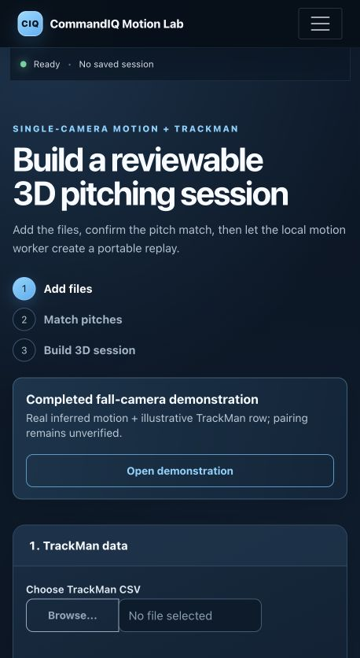

← All projects
Single-camera motion review
CommandIQ Motion Lab
A pitching session review that keeps estimated motion, source video, event markers, and a reviewed TrackMan pitch row on one timeline.
- Input
- Fixed-camera video and a TrackMan export
- Review
- Pitch pairing and candidate events
- Output
- Portable replay and coach report
What the replay shows
One reviewable pitch timeline
The workflow starts with a fixed-camera recording, then asks a reviewer to confirm the pitch match and inspect event candidates.
The replay aligns source video, estimated 3D pitcher motion, event markers, and measured ball-flight facts from the reviewed TrackMan row.
The motion is a single-camera estimate. It is not validated motion capture, a force or torque measurement, or a medical assessment.
Image gallery
Setup and skeleton-only replay
These captures show the actual local application interface. The replay image omits player identity and source video.


Interpretation
Motion estimate beside measured flight
- PairingThe reviewer confirms which TrackMan row belongs with the video before measured pitch facts appear in the replay.
- EventsLeg lift, foot contact, release, and follow-through are candidate markers that can be reviewed on the shared playhead.
- LimitsDepth and physical timing are bounded by the camera view and available source evidence.